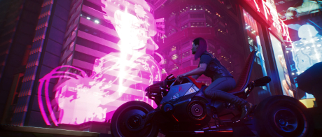
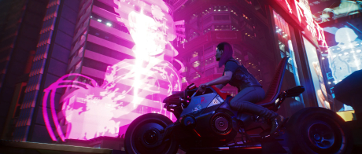

Найт-Сити изменит тебя навсегда!
Cyberpunk 2077 — приключенческая ролевая игра, действие которой происходит в мегаполисе Найт-Сити, где власть, роскошь и модификации тела ценятся выше всего. Ты играешь за V, наёмника в поисках устройства, позволяющего обрести бессмертие. Ты сможешь менять киберимпланты, навыки и стиль игры своего персонажа, исследуя открытый мир, где твои поступки влияют на ход сюжета и всё, что тебя окружает.
 
